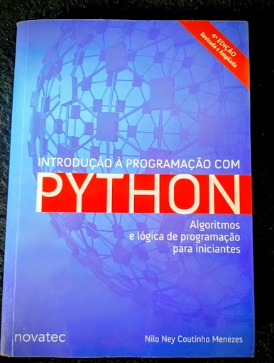

Tecnologia
Introdução à Programação com Python
O guia mestre para dominar a lógica que move o mundo dos dados.
O guia mestre para dominar a lógica que move o mundo dos dados.
Uma imersão brutal nos instintos que moldam nossas decisões.
A jornada definitiva sobre coragem, sacrifício e destino.
Onde a neblina de Londres esconde segredos perturbadores.
A estratégia milenar para alcançar o topo do seu campo.
As fundações históricas que sustentam a fé ocidental.
A disciplina indomável dos 300 de Esparta nas Termópilas.
Questionamentos profundos sobre o futuro da nossa civilização.
A fascinante trajetória do surgimento da consciência humana.
A sabedoria imortal para vencer batalhas antes de iniciá-las.